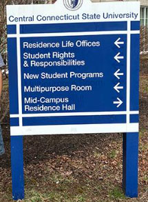
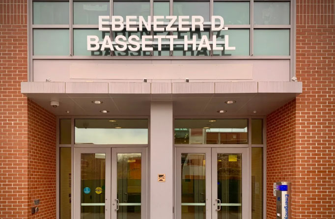

Found on campus
Signs, symbols, and lettering in everyday spaces.


A campus typography collection · CCSU
While exploring the CCSU campus, I notoced that typography is all around us. From buildings, directional signs, each show a great example uses different typefaces. The typefaces that I captured portray directional use to navigate your way around CCSU. I noticed how some signs use traditional serif lettering, while others use bold, modern sans-serif fonts. The use of these bold typography is to allow it to be eye catching. This experience helped me appreciate how typography contributes to the campus environment, and helps those get around campus.
08 PHOTOGRAPHS CENTRAL CONNECTICUT STATE UNIVERSITY
Signs, symbols, and lettering in everyday spaces.

